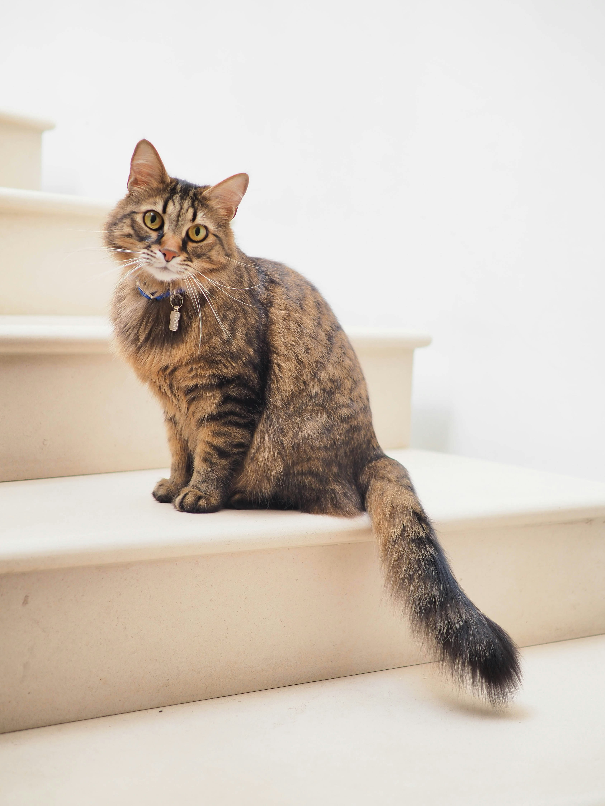
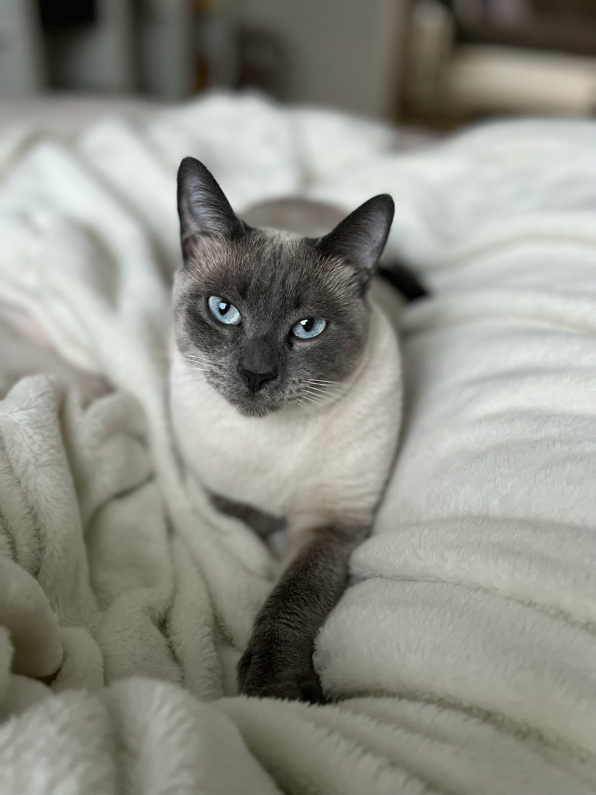
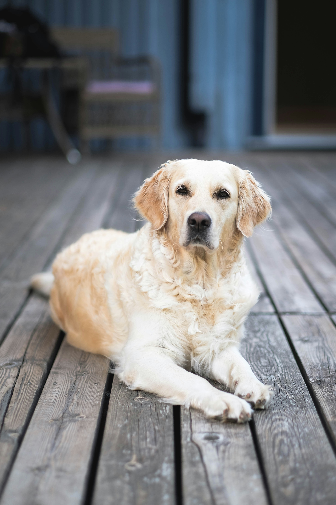

Visit Us To Know More
Discover the joy of pet adoption at Love at First Paws. We connect loving families with cats and dogs in need of forever homes. Find your perfect companion today!
At Love At First Paws, our journey began with a simple yet powerful mission:
to ensure that every cat and dog finds a loving home.
Our story is rooted in compassion, dedication, and a deep love for animals.
Our Mission is to connect homeless cats and dogs with caring families.
We strive to make the adoption process simple, transparent, and rewarding for both the animals and their new owners.
Our goal is to reduce the number of pets in shelters, promote responsible pet ownership, and support the well-being of animals everywhere.
Meet some of our adorable and adoptable cats and dogs


